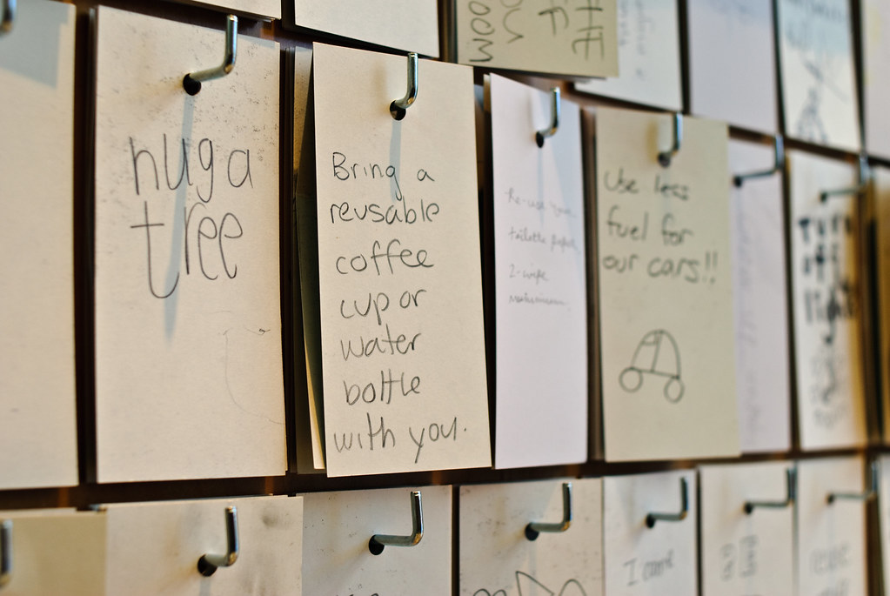

Enter your name for a message.

Why did we choose this cause?
We want to emphasize the seriousness of it,
and give suggestions on how to properly take action/take
care of the environment. Littering, and not recycling
are just some of the challenges that are in the community.
We want to live in a world where climate change
isn’t an ongoing problem. The environment plays a significant
role in our survival and is a home to many different species.
Just remember that earth naturally warms up, however
due to human activities mainly beginning during industrial
revolution, it has sped up the process and increased the
earth’s temperature so it is our responsibility to try and reduce this.